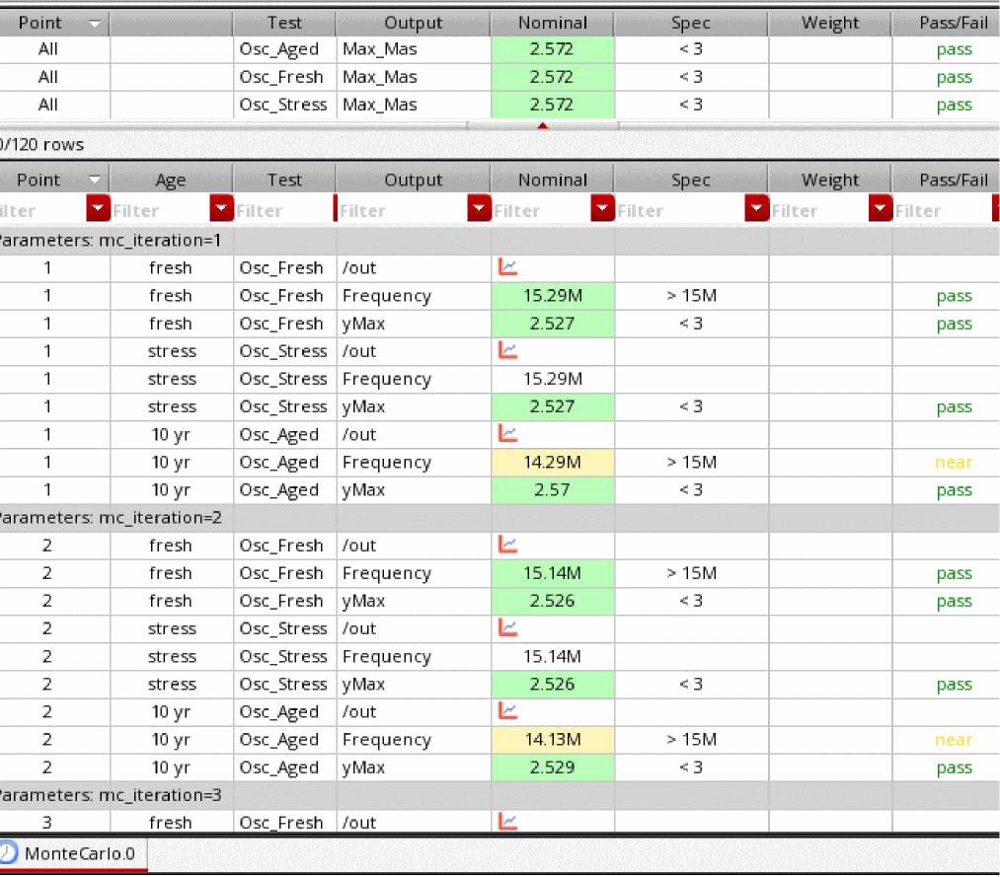

3
Advanced Aging Analysis
Device wear-out results in end-of-life failures. To extend device lifetime, designers need to accurately predict the effect of stress on a device lifetime. Until now, designers had to account for each source of device degradation in isolation.They use reliability analysis to estimate device in one analysis due to electrical stress, then re-rate the lifetime based on estimated die temperature and the effect of process variation.
The Advanced aging analysis feature of the Cadence Reliability solution enables designers to accurately predict product wear-out, and therefore allows them to achieve their design target for extended lifetime of devices without over-designing each transistor, which results in increased die area and increased product cost.
Advanced aging analysis has been enhanced to include other effects that contribute to device degradation, besides electrical stress, such self-heating and process variation.
Self-Heating and Aging Flows
You can enable the self-heating flow by setting the value of type parameter in the rel_mode control statement to she. For example:
rel_mode type=she
The self-heating and aging flow can be enabled by setting the type parameter in the rel_mode control statement to all, as shown below.
rel_mode type=all
You can output the device power in the self-heating flow by using the output_she_power control statement as follows:
output_she_power value=yes
If you use the URI self-heating flow, you can specify the uri_lib file=<name of the Library> control statement to define the URI library to be used.
Aging Monte Carlo Analysis
To account for process variation, you can combine advanced aging analysis with Monte Carlo analysis. As a result, you can specify the process variation models and aging models together in one simulation run.
The advanced aging analysis supports the following two flows to perform aging MonteCarlo analysis for the agemos and appendage flow:
Single Stress (1+N) flow
In this flow, a nominal stress analysis is run first. Next, MonteCarlo analysis is performed on the aging analysis. No variations are performed on the stress analysis. This is shown in the figure below.
The reliability block for the stress simulation can be defined as follows:
mc1 montecarlo numruns=0 seed=12345 variations=all sampling=standard \
donominal=yes savefamilyplots=yes savedatainseparatedir=yes \
rel reliability {
// reliability control statements
age time = [10y]
deltad value = 0.1
report_model_param value=yes
simmode type=stress
// fresh/stress simulation.
tran_stress tran start = 0 step = 1u stop = 10u
}
The reliability block for the aging MonteCarlo simulation can be defined as follows:
mc1 montecarlo numruns=100 seed=12345 variations=all sampling=standard \ savedatainseparatedir=yes savefamilyplots=yes {
rel reliability {
// reliability control statements
age time = [10y]
deltad value = 0.1
report_model_param value=yes
// fresh/stress simulation.
simmode type=aging file="stress.bs0"
// aging simulation statements.
tran_aged tran start = 0 step = 1us stop = 10us
}
}
1+N Flow in ADE Assembler
You can use the 1+N flow in ADE Assembler by performing the following steps:
- Set up reliability analysis by using the Reliability Analysis tree of the Data View Assistant.
- Enable Monte Carlo Sampling run mode and set up the Monte Carlo simulation options.
- Run simulation.
In 1+N mode, a nominal Monte Carlo simulation is run for stress followed by Monte Carlo aging simulations. It is optional to run Monte Carlo fresh simulation, but is supported. Each fresh or aged pair uses the same statistical sample.
Also see: Important Points to Note
Multi-Stress (N+N) flow
In this flow, Monte Carlo analysis is performed on both stress and aging simulations, as shown in the figure below.
In this flow, simulation can be run on a single netlist or separate netlists. The following is an example of running stress and aging analyses in the same netlist:
mc1 montecarlo numruns=100 seed=12345 variations=all sampling=standard \
savedatainseparatedir=yes savefamilyplots=yes {
rel reliability {
// reliability control statements
age time = [10y]
deltad value = 0.1
report_model_param value=yes
// fresh/stress simulation.
tran_stress tran start = 0 step = 1u stop = 10u
// aging simulation statements.
tran_aged tran start = 0 step = 1us stop = 10us
}
}
The following is an example of running stress and aging analyses in separate netlists:
mc1 montecarlo numruns=100 seed=12345 variations=all sampling=standard savedatainseparatedir=yes savefamilyplots=yes {
rel reliability {
// reliability control statements
age time = [10y]
deltad value = 0.1
uri_lib file=“libURI.so” uri_mode=appendage
report_model_param value=yes
simmode type=stress
// fresh/stress simulation.
tran_stress tran start = 0 step = 1u stop = 10u
}
}
mc1 montecarlo numruns=100 seed=12345 variations=all sampling=standard savedatainseparatedir=yes savefamilyplots=yes {
rel reliability {
// reliability control statements
age time = [10y]
deltad value = 0.1
report_model_param value=yes
uri_lib file=“libURI.so” uri_mode=appendage
// fresh/stress simulation.
simmode type=aging file="stress.bs0"
// aging simulation statements.
tran_aged tran start = 0 step = 1us stop = 10us
}
}
N+N Flow in ADE Assembler
You can use the N+N flow in ADE Assembler by performing the following steps:
- Set up reliability analysis by using the Reliability Analysis tree of the Data View Assistant.
-
Select the
Monte Carlo Samplingrun mode in the Run Mode toolbar. -
In the Monte Carlo options form, select
Multi stress (N + N)in the drop-down list in the Reliability Mode section.
You can set the default value for this drop-down list by using the maestro.monte reliabilitymode environment variable in .cdsenv. -
Run simulation.
As shown in the example of results given below, in N+N mode, the fresh, stress, and aging analyses are run for all Monte Carlo iterations.

Important Points to Note
- To run reliability analysis with Monte Carlo, ADE Assembler requires a Virtuoso_Variation_Option (VVO) license.The basic Monte Carlo flow is supported with reliability analysis
- Non-statistical corners and global variable sweep are supported
- Manual creation of statistical corners (both sequence and parameter value based) is supported
- Mismatch contribution is supported
- Sample re-ordering, autostop, high-sigma and automatic k-sigma statistical corner creation are not supported
- Gradual aging, self-heating, and reliability scenarios are not supported
Return to top